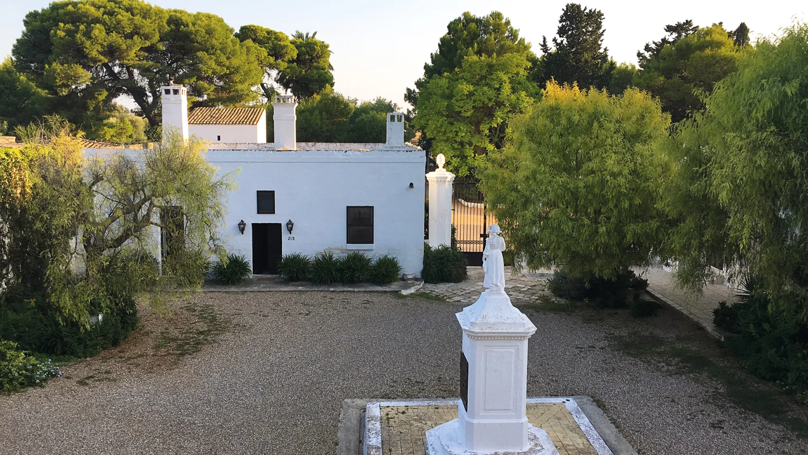
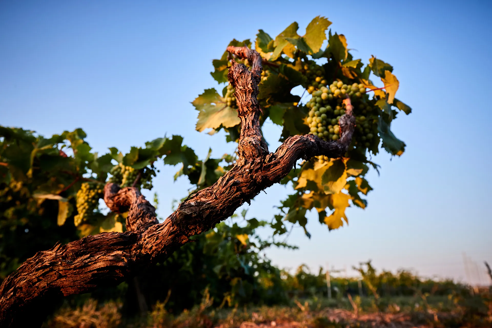
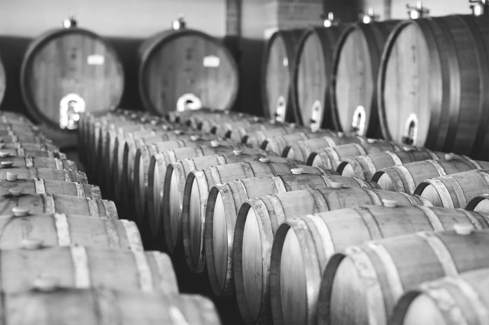
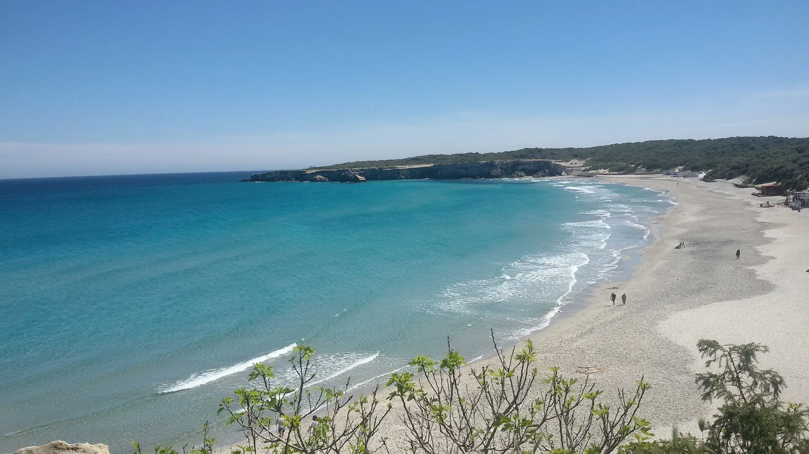
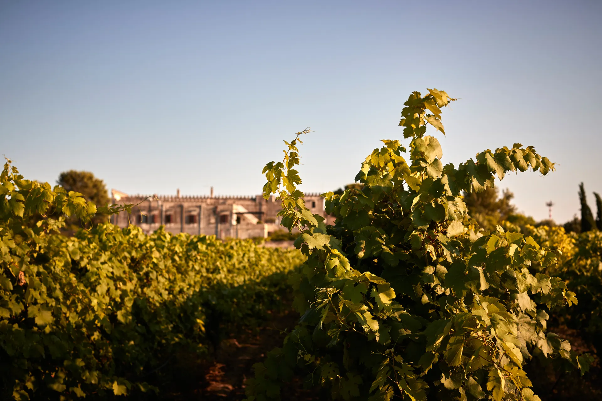

01 · La torre
Collezione 53
La linea Luxury: Primitivo di Manduria da vecchie vigne e Negroamaro, da uve selezionate a mano.
Leporano, sul mar Ionio, a sud di Taranto. Scorri e attraversa le terre dei Feudi Salentini: ogni tappa è una delle nostre collezioni.
Scorri
01 · La torre
La linea Luxury: Primitivo di Manduria da vecchie vigne e Negroamaro, da uve selezionate a mano.
02 · La terra rossa
Sette vini dalle uve del Salento: Primitivo di Manduria, Negroamaro, Malvasia bianca e nera, un rosato.
03 · Il campo
Un bianco e un Primitivo da agricoltura biologica, Puglia IGP.
04 · Il mare
La linea più ampia, dodici vini: dal Sassirossi delle vigne ad alberello al Susumaniello, dal bianco Cala al rosato Tre Cuori.
05 · Il tramonto
La linea Lounge Bar per l'aperitivo e i primi piatti: un rosato leggermente mosso, Primitivo, Negroamaro e Malvasia Nera.
Rotondo, teso, ampio, lungo: così si descrive un vino in bocca. Disegna quello che ti piace e ti diciamo quale dei nostri vini gli somiglia.
Disegna qui con il mouseDisegna qui con il dito
Oppure scegli una forma
Feudi Salentini è a Leporano, in provincia di Taranto, sul mar Ionio. Dalle uve del Salento, Primitivo, Negroamaro, Malvasia e Susumaniello, nascono i nostri vini.





Leporano, sul mar Ionio.
Il bilancio di sostenibilità 2025 è online: leggilo in PDF.
Vigne, masseria di famiglia e degustazione. Scegli l'esperienza e quante persone siete: a ogni persona in più si apparecchia un calice.